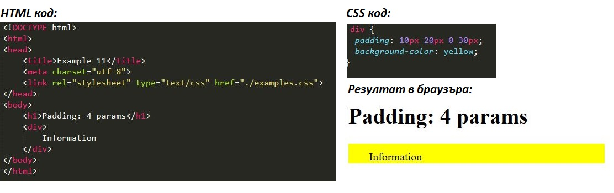

Въведение
Всички HTML елементи могат да се разглеждат като кутии. В CSS терминът "Box model" се използва, когато става дума за дизайн и оформление. CSS кутийният модел е по същество кутия, която обвива всеки HTML елемент. Състои се от: вътрешно и външно отстояние, граници и съдържание.
Display
Начинът, по който се показват елементите в браузъра, се определя от CSS свойството display. Всеки елемент има стойност по подразбиране за това как трябва да се показва на екрана, но тя може да бъде променяна експлицитно, като се избере този елемент в CSS и се декларира нова стойност на свойството display. Съществуват много различни стойности за него, като сред най-често срещаните са: block, inline, inline-block и none.
-
Block
Стойността block прави елемента да се позиционира като блок т.е. да се подравнява вертикално с тези около него. На елементите, зададени да се представят като блокови, могат да се задават ширина и височина.
p { display: block; }Код 1. Представяне на параграф като блоков елемент [3]
Пример 1. Нагледно представяне на позиционирането на елементите със свойство display: block [5]
-
Inline
Стойността inline прави елемента да се позиционира на един ред т.е. да се подравнява хоризонтално с тези около него. Задаването на ширина и височина не е възможно при елементи, които имат атрибут display с такава стойност.
p { display: inline; }Код 2. Представяне на параграф като елемент, подравнен на същия ред [3]

Пример 2. Нагледно представяне на позиционирането на елементите със свойство display: inline [5]
-
Inline-block
Стойността inline-block комбинира в себе си идеите на горните две стойности. Тя прави елемента да се възползва от свойствата си като блок, а именно да му се задават ширина и височина, но не го принуждава да започва на нов ред, както е при block, ами се подравнява хоризонтално с тези преди него.
p { display: inline-block; }Код 3. Представяне на параграф като елемент, подравнен на същия ред, но със свойствата на блоков елемент [3]
Пример 3. Нагледно представяне на позиционирането на елементите със свойство display: inline-block [5]
-
None
Стойността none прави елемента да не се показва на екрана. За него не се заделя дори място на екрана както е при visibility: hidden например.
p { display: none; }Код 4. Представяне на параграф като невидим елемент, незаемащ пространство на екрана [3]

Пример 4. Нагледно представяне на позиционирането на елементите със свойство display: none [5]
Box Model
CSS Box Model концепцията обобщава идеята, че всеки HTML елемент на страницата се представя в правоъгълна кутия. Изображението по-долу илюстрира най-общо какво включва този модел:

Фигура 1. Нагледно представяне на кутийния модел [1]
Кутийният модел се определя от няколко свойства, които задават размерите на кутията. В сърцевината се позиционира content (съдържанието), което от своя страна се дефинира чрез ширината и височината на елемента, които могат да бъдат заложени чрез свойството display, съдържанието на елемента или от специфичните свойства width и height. Свойствата padding (вътрешно отстояние) и border (граница) разширяват измеренията на кутията извън ядрото на елемента.Последното свойство от кутийния модел е margin(външно отстояние), което допълнително разширява мястото, което елементът заема на страницата.
div {
border: 6px solid #949599;
height: 100px;
margin: 20px;
padding: 20px;
width: 400px;
}
Код 5. Представяне на елемента div чрез всички свойства на кутийния модел [3]
Пример 5. Нагледно представяне на всички свойства на кутийния модел [5]
Според кутийния модел общата ширина на елемента се изчислява по следната формула:
margin-right + border-right + padding-right + width + padding-left + border-left + margin-left
Код 6. Формула за пресмятане на общата ширина на елемент при Box Model[3]
За сравнение, височината на всеки елемент се изчислява по следния начин:
margin-top + border-top + padding-top + height + padding-bottom + border-bottom + margin-bottom
Код 7. Формула за пресмятане на общата височина на елемент при Box Model[3]
Content
Всеки елемент има стандартна ширина и височина. Тези параметри могат да бъдат от по 0 пиксела, но браузърите по подразбиране ще зададат на всеки елемент определен размер. В зависимост от начина, по който се показва, стандартната ширина и височина биват адекватни. Ако елементът е от ключово значение за оформлението на страница, може да се наложи да се посочат конкретни стойности за свойствата на ширината и височината. В този случай, могат да бъдат зададени стойности за елементите, които не се подравняват хоризонтално (non-inline elements).
-
Width
Ширината по подразбиране на даден елемент зависи от стойността на свойството display. Block елементите имат ширина по подразбиране от 100%, заемайки цялото налично хоризонтално пространство. Block и inline-block елементите се свиват и разширяват водоравно, за да се адаптират към своето съдържание. Тъй като inline-базираните елементи не могат да имат фиксиран размер, то ширина и височина се прилагат само за non-inline елементите. За задаване на ширина се използва свойството width:
div { width: 400px; }Код 8. Задаване на ширина на елемента div [3]
Пример 6. Нагледно представяне на свойството width на съдържанието на елемент [5]
-
Height
Височината по подразбиране се определя от съдържанието. Един елемент се свива и разширява вертикално, ако е необходимо, за да се адаптира към съдържанието си. За задаване на специфична височина за non-inline елементи се използва свойството height:
div { height: 100px; }Код 9. Задаване на височина на елемента div [3]
Пример 7. Нагледно представяне на свойството height на съдържанието на елемент [5]
Padding
В зависимост от вида на елемента браузърите могат да прилагат стойности по подразбиране за вътрешно (padding) и външно (margin) отстояние за четливост и яснота. Свойството padding позволява да се зададат разстояния от съдържанието на елемента до границите му. Те могат да се зададат и за четирите посоки по отделно за всяка чрез свойствата padding-top, padding-right, padding-bottom и padding-left, съответно за горе, дясно, долу и ляво. Когато е едно свойство, в зависимост от това колко стойности се въведат като параметри, се определя в четирите посоки колко ще е дистанцията:
-
Един параметър
При задаване само на една стойност на свойството padding от четирите страни на елемента се заделя зададеното разстояние:
div { padding: 20px; }Код 10. Задаване на вътрешно отстояние на елемента div чрез един параметър [3]
Пример 8. Нагледно представяне на свойството padding със зададен един параметър [5]
-
Два параметъра
При задаване на две стойности на свойството padding се заделя отгоре и отдолу толкова, колкото е първото число, а отляво и отдясно толкова, колкото е второто:
div { padding: 10px 20px; }Код 11. Задаване на вътрешно отстояние на елемента div чрез два параметъра [3]

Пример 9. Нагледно представяне на свойството padding със зададени два параметъра [5]
-
Три параметъра
При задаване на три стойности на свойството padding се заделя отгоре колкото е първото число, а отляво и отдясно толкова, колкото е второто, а отдолу, колкото е третото:
div { padding: 10px 20px 30px; }Код 12. Задаване на вътрешно отстояние на елемента div чрез три параметъра [3]

Пример 10. Нагледно представяне на свойството padding със зададени три параметъра [5]
-
Четири параметъра
При задаване на четири стойности на свойството padding се заделя толкова, колкото са въведените числа като се започва с отстоянието отгоре и се върви по часовниковата стрелка:
div { padding: 10px 20px 0 30px; }Код 13. Задаване на вътрешно отстояние на елемента div чрез четири параметъра [3]
Пример 11. Нагледно представяне на свойството padding със зададени четири параметъра [5]
Border
Границите попадат между вътрешното и външното отстояние на елемента. Свойството border изисква наличието на три стойности: ширина, стил и цвят. Могат да се зададат директно в този ред към свойството или всяка да се дефинира по отделно чрез свойствата border-width, border-style и border-color. Border-width задава дебелина на границата, border-style определя стила й, като сред най-често срещаните стилове са solid, double, dashed, dotted и none (удебелен, двойно удебелен, с тирета, с точки и никакъв), но съществуват и други, и border-color определя цвета й.
div {
border: 6px solid #949599;
}
Код 14. Задаване на всички атрибути на границата от всички страни на елемента div [3]
Пример 12. Нагледно представяне на свойството border [5]
Стойностите на свойството border могат да се зададат и за четирите посоки по отделно за всяка чрез свойствата border-top, border-right, border-bottom и border-left, съответно за горе, дясно, долу и ляво. По-долу са показани два начина за задаване на параметери за граница отдолу, като във втория случай се дефинира само ширината на долната граница:
div {
border-bottom: 6px solid #949599;
}
Код 15. Задаване на всички атрибути на долната граница на елемента div [3]
Пример 13. Нагледно представяне на свойството border-bottom [5]
div {
border-bottom-width: 12px;
}
Код 16. Задаване на дължина на долната граница на елемента div [3]
Пример 14. Нагледно представяне на свойството border-bottom-width [5]
Освен разгледаните до момента отделни свойства за границата, съществува още едно, свързано с възможността да се заоблят ъглите на рамката: border-radius. То се определя чрез задаване на числови стойности в пиксели или проценти и в зависимост от това колко на брой параметъра се въведат (аналогично като при padding). Може да се дефинира и за всяка посока по отделно (аналогично като при border):
div {
border-radius: 5px;
}
Код 17. Задаване на заобляне на границата на елемента div [3]
Пример 15. Нагледно представяне на свойството border-radius [5]
div {
border-top-right-radius: 5px;
}
Код 18. Задаване на заобляне на границата горе вдясно на елемента div [3]
Пример 16. Нагледно представяне на свойството border-top-right-radius [5]
Margin
Свойството margin позволява да се зададат разстояния извън границите на елемента. Използват се за пoзициониране на елементите в страницата или за подсигуряване на свободно пространство за отстояние. Особеност на това свойство е фактът, че що се отнася за дистанцията нагоре и надолу, тя не може да се задава за inline елементи, а само за inline-block и block. Външните отстояния могат да се зададат и за четирите посоки по отделно за всяка чрез свойствата margin-top, margin-right, margin-bottom и margin-left, съответно за горе, дясно, долу и ляво.
-
Задаване с параметри(числа)
Когато е едно свойство, в зависимост от това колко стойности се въведат като параметри, се определя в четирите посоки колко ще е дистанцията (аналогично като при padding).
div { margin: 20px; }Код 19. Задаване на външно отстояние на елемента div с един параметър [3]
Пример 17. Нагледно представяне на свойството margin с един параметър [5]
-
Auto
Чрез стойността auto може да се центрира хоризонтално елемента в неговия контейнер. Тогава той ще заеме определената му ширина и оставащото пространство ще бъде разпределено равномерно между лявото и дясното отстояние:
div { width: 300px; margin: auto; border: 1px solid red; }Код 20. Задаване на външно отстояние на елемента div със стойност auto [4]

Пример 18. Нагледно представяне на свойството margin със стойност auto [5]
-
Inherit
Стойността inherit позволява на елемента да наследи отстоянията, зададени на неговия елемент-родител.
div { border: 1px solid red; margin-left: 100px; } p { margin-left: inherit; }Код 21. Задаване на външно отстояние на елемента p със стойност inherit [4]
Пример 19. Нагледно представяне на свойството margin със стойност inherit [5]
Margin, както и padding свойствата са без възможност за задаване на цвят и видимо не могат да се покажат участъците, които те заемат върху страницата. По тази причина за margin се приема фонът на елемента-родител, а при padding се приема фонът на елемента, към който е приложен.
Box sizing
До момента кутийният модел е представен като адитивен дизайн. Но с навлизането на CSS3 се предоставя възможност чрез свойството box-sizing да се променя как точно да работи моделът и как да се изчислява размерът на елемента.

Фигура 2. Представяне на кутийния модел като преоразмеряващ се дизайн.[3]
Свойството приема три основни стойности: content-box, padding-box и border-box, всяка от които имат леко по-различно влияние едно от друго върху изчислението на големината на елемента.
-
Content box
Първоначалната стойност content-box е стойността по подразбиране, която представя кутийния модел като адитивен дизайн. Ако не се използва свойството box-sizing, това ще е стойността по подразбиране за всички елементи. Размерът на всеки започва със свойствата width и height, и след това се добавят стойности за свойствата padding, border и margin. Следователно можем да заключим, че общата ширина и височина на елемента ще се изчисляват по формулите, дадени за кутийния модел.
div { -webkit-box-sizing: content-box; -moz-box-sizing: content-box; box-sizing: content-box; }Код 22. Задаване на стойност content-box на свойството box-sizing за елемента div [2]

Пример 20. Нагледно представяне на свойството box-sizing със стойност content-box [5]
С въвеждането на CSS3 браузърите постепенно започват да поддържат различни свойства и стойности, включително и box-sizing чрез използване на префикси. В днешно време вече не е необходима тяхната употреба, но по-старите версии на браузърите ги изискват. Сред най-често срещаните са -moz-, -ms- и -webkit-, съответно за Mozilla Firefox, Microsoft Internet Explorer/Microsoft Edge и Google Chrome/Apple Safari.
-
Padding box
Стойността padding-box променя кутийния модел, като включва стойностите на свойството padding към ширината и височината на елемента. С повишаване на вътрешното отстояние, размерът на съдържанието на елемента се свива пропорционално. Ако се добавят граница или външно отстояние, техните стойности ще се добавят към свойствата width и height за изичсляване на пълната големина на кутията.
div { box-sizing: padding-box; }Код 23. Задаване на стойност padding-box на свойството box-sizing за елемента div [2]
За padding-box oбщата ширина на елемента се изчислява по следната формула:
margin-right + border-right + width + border-left + margin-leftКод 24. Формула за пресмятане на общата ширина на елемент при box-sizing:padding-box [3]
За сравнение, височината на всеки елемент се изчислява по следния начин:
margin-top + border-top + height + border-bottom + margin-bottomКод 25. Формула за пресмятане на общата височина на елемент при box-sizing:padding-box [3]
С развитието на CSS спецификацията стойността padding-box на свойството box-sizing се отхвърля и не трябва да бъде използвана.
-
Border box
Стойността border-box променя кутийния модел така, че всички стойности на свойствата border или padding се добавят към ширината и височината на елемента. Ако се добави външно отстояние, то стойностите трябва да бъдат добавени при изчисляване на пълната големина на кутията. Без значение, коя стойност на свойството box-sizing се използва, външното отстояние трябва да се добави при пресмятане на целия размер на елемента.
div { box-sizing: border-box; }Код 26. Задаване на стойност border-box на свойството box-sizing за елемента div [2]

Пример 21. Нагледно представяне на свойството box-sizing със стойност border-box [5]
За border-box oбщата ширина на елемента се изчислява по следната формула:
margin-right + width + margin-leftКод 27. Формула за пресмятане на общата ширина на елемент при box-sizing:border-box [3]
За сравнение, височината на всеки елемент се изчислява по следния начин:
margin-top + height + margin-bottomКод 28. Формула за пресмятане на общата височина на елемент при box-sizing:border-box [3]
Най-общо казано, най-подходящата стойност за употреба на свойството box-sizing е border-box. Тя значително улеснява изчисляването на размера на елемента. Освен това, лесно могат да се комбинират стойности на дължините. Например, когато искаме кутията да е широка 40%, добавянето на вътрешно отстояние от 20 пиксела и граница от 10 пиксела от всяка страна не е трудно и все пак може да се гарантира, че реалната ширина ще остане 40%, въпреки добавките.
Обобщение
На база на всичко, разгледано до момента за Box model и Box-sizing в CSS, ще представим нагледно как могат да се използват двете при стилизиране на елементи.
div.container {
width: 100%;
border: 2px solid black;
}
div.box {
box-sizing: border-box;
width: 50%;
border: 5px solid red;
float: left;
}
p {
background-color: lightgrey;
width: 300px;
border: 25px solid green;
padding: 25px;
margin: 25px;
}
Код 29. Обобщение на Box model [1] и Box-sizing [2]
Пример 22. Общо представяне на Box model и Box-sizing [5]
Източници
[1] W3Schools, "CSS Box Model" [https://www.w3schools.com/css/css_boxmodel.asp]
[2] W3Schools, "CSS Box-sizing property" [https://www.w3schools.com/cssref/css3_pr_box-sizing.asp]
[3] Learn to Code, "Opening the Box Model" [https://learn.shayhowe.com/html-css/opening-the-box-model/]
[4] W3Schools, "CSS Margin" [https://www.w3schools.com/css/css_margin.asp]
[5] Примери, разработени на база на представените в източници [2],[3] и [4] такива